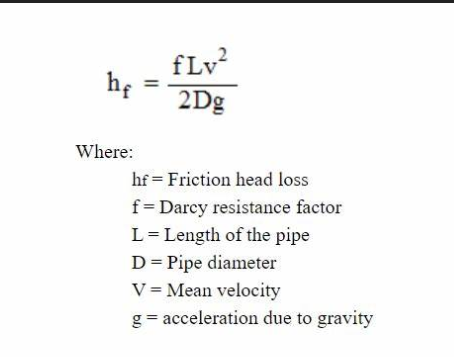

a) To calculate the Coefficient of discharge of G.I pipe by changing length and secondly changing velocity.
b) To calculate the friction factor and Reynolds number for a given fluid flow setup and plot a graph between them.
The friction factor (f) is a dimensionless quantity used in fluid mechanics to describe the resistance to flow in a pipe due to friction. The Reynolds number (Re) is a dimensionless quantity that helps classify the flow regime as laminar, transitional, or turbulent. The friction factor is a dimensionless number that describes how resisted the flow of a fluid is inside a pipe or duct due to the internal surface roughness and flow velocity. It is crucial in fluid dynamics calculations and is often determined using the Moody chart for turbulent flow and the Darcy-Weisbach equation for pressure loss. Understanding the friction factor aids in designing efficient piping systems, minimizing energy loss, and predicting pressure drops.
Friction Coefficient: N/A
Pressure Loss: N/A
The graph plots the relationship between the friction factor (f) and Reynolds number (Re) based on the data entered in the simulation table.